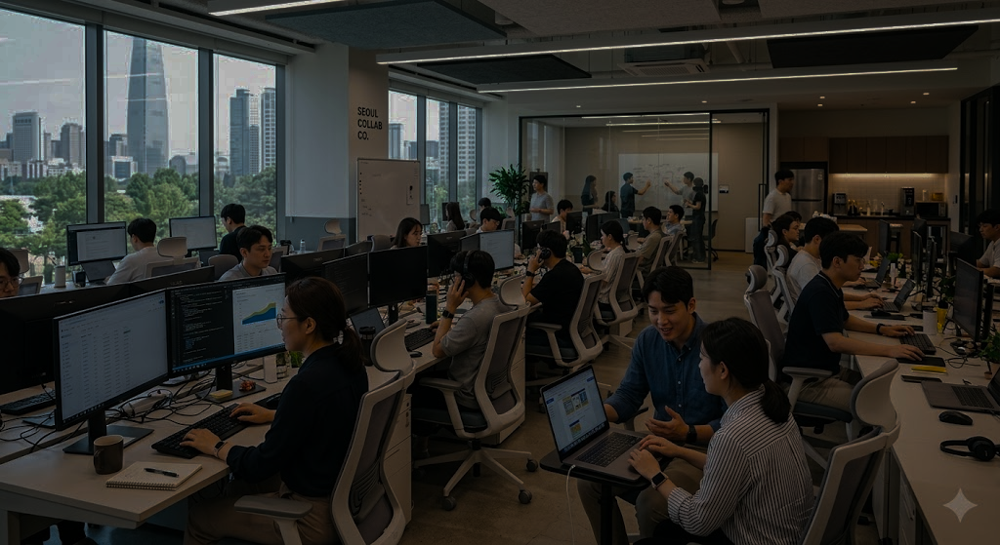

지금 가장 핫한 AI 실무 사례와 순위별 TOP 게시물을 만나보세요
지피터스는 다양한 분야의 전문가들이 모여
AI의 새로운 가능성을 탐구하는 커뮤니티입니다.
0+
커뮤니티 멤버
0+
누적 콘텐츠
0+
AI 실무 사례
0
지피터스 시작
GPT-ers · AI Practical Life Service
지피터스가 AI 관련 최신 뉴스를 알려드립니다.
최신 AI 소식의 허브
국내 최대 AI 커뮤니티 지피터스에서
다양한 AI 실무 활용 사례를 만나보세요.
AI 관련 무료 이벤트와 유료 웨비나를 소개합니다.
GPTERS
최신 트렌드부터 맞춤 활용법까지
지피터스 뉴스레터는 모두가 AI 발전 속도에 뒤처지지 않도록 꼭 필요한 주간 뉴스와 커뮤니티의 가장 흥미로운 AI 활용법을 전해드립니다.

100% 결과물 완전 보장
우리 팀의 AI 역량을 높이고 싶으신가요? 기업 맞춤 교육부터 워크숍, 컨설팅까지 지피터스가 함께합니다.